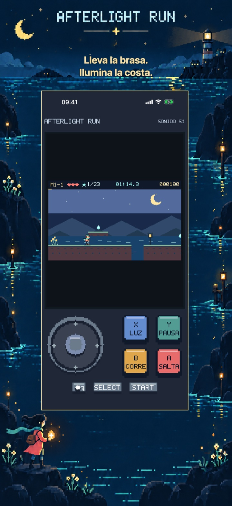
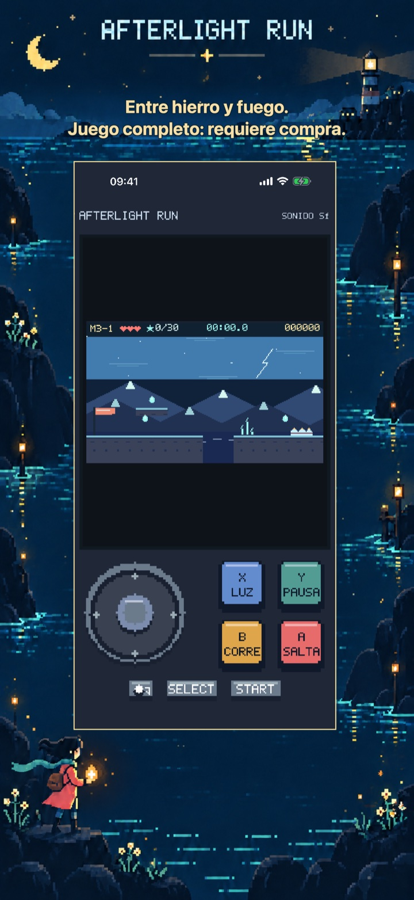
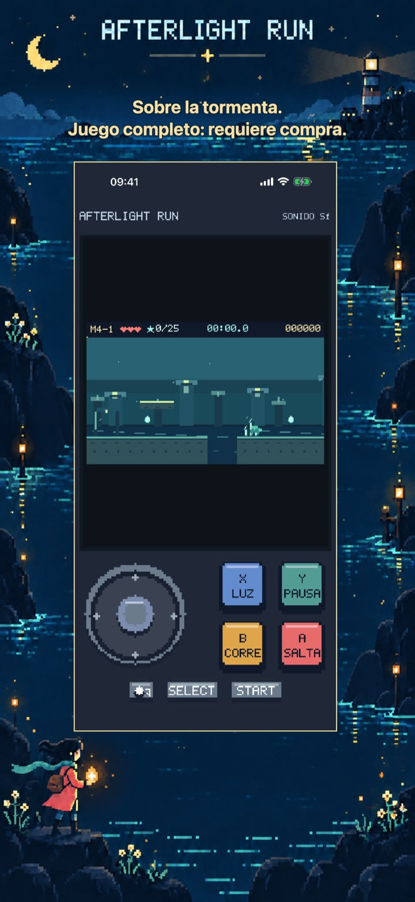
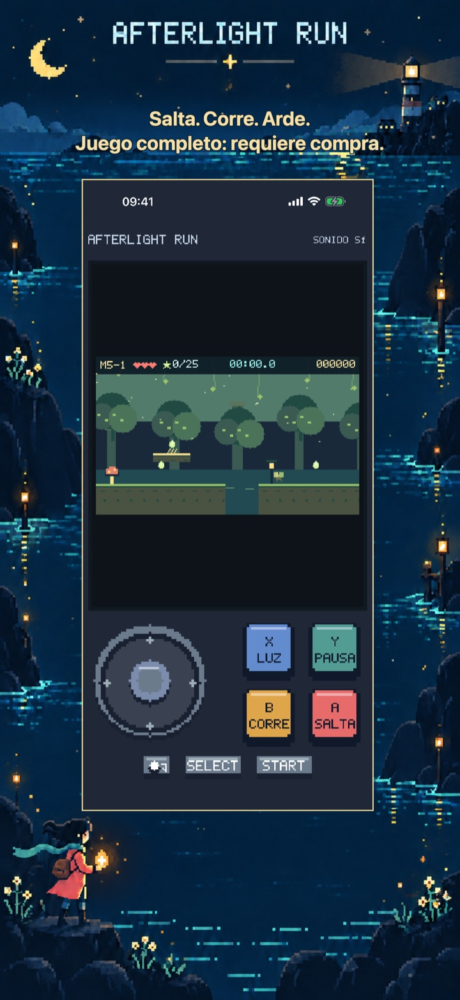
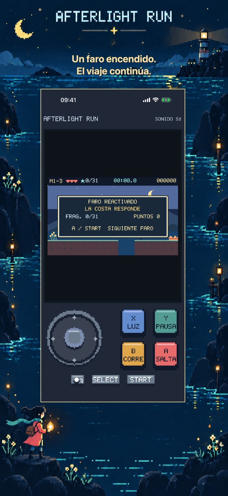
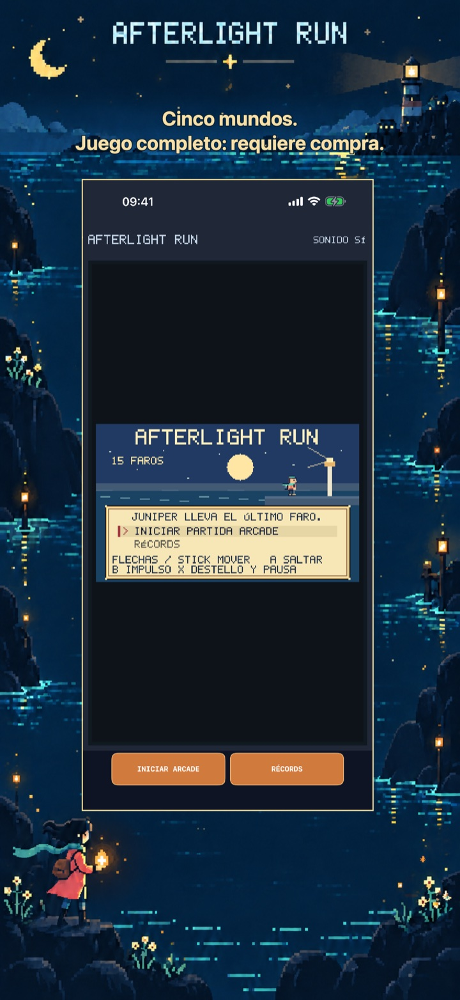

Afterlight Run: Luz y saltos
Afterlight Run: Luz y saltos
Lleva la brasa de Juniper por cinco mundos bajo la tormenta. Salta, corre y enciende quince faros. Tres rutas gratis; compra única del juego completo.
Próximamente en el App Store
El primer mundo: tres rutas completas.

Aventuras píxel
Un viaje propio de este juego
Quince rutas en cinco mundos cuentan una historia completa. Cada partida arcade empieza en el primer faro con tres vidas; completar un mundo recupera una, hasta tres. Las tablas locales guardan los diez mejores resultados y tiempos de campañas completas. No hay clasificación en línea ni guardado para continuar a mitad de partida.
Empieza con el inicio gratuito
El primer mundo: tres rutas completas.
Desbloquea cuatro mundos más, doce rutas, toda la historia y el final. Recorre de nuevo la campaña arcade y compite con tus récords locales.
Pago único · Sin anuncios · Sin suscripción
Afterlight Run: Luz y saltos
Cinco mundos, una última brasa
Lleva una brasa que se apaga al siguiente faro mientras la tormenta se acerca a la costa.
Juniper salta, se impulsa y lanza llamaradas en una aventura de plataformas con arte píxel. Ascensores, plataformas que se desmoronan, viento y criaturas de tormenta cambian cada ruta. Los puntos de control conservan los fragmentos y enemigos derrotados de la ruta actual al perder una vida.
Quince rutas en cinco mundos cuentan una historia completa. Cada partida arcade empieza en el primer faro con tres vidas; completar un mundo recupera una, hasta tres. Las tablas locales guardan los diez mejores resultados y tiempos de campañas completas. No hay clasificación en línea ni guardado para continuar a mitad de partida.
El primer mundo: tres rutas completas.
Desbloquea cuatro mundos más, doce rutas, toda la historia y el final. Recorre de nuevo la campaña arcade y compite con tus récords locales.
Sin anuncios, cuentas, analítica ni suscripciones. Una compra no consumible desbloquea el juego completo de forma permanente. Apple StoreKit gestiona las compras y restauraciones; el precio aparece antes de confirmar. Incluye inglés, español, francés, alemán e italiano. Todo el contenido está incluido localmente.
Dentro del juego
Dentro del juego
Seis vistas nativas muestran la idea principal, otros dos mundos, mayor profundidad, las recompensas del viaje y su inicio o atlas.
Ilumina la costa.

Juego completo: requiere compra.

Juego completo: requiere compra.

Juego completo: requiere compra.

El viaje continúa.

Juego completo: requiere compra.
Vídeo de juego en inglés
Un vídeo de juego de 24 segundos en inglés. El contenido adicional requiere una compra única del juego completo.
Ayuda y soporte
¿Tienes dudas sobre Afterlight Run: Luz y saltos?
Encuentra respuestas prácticas sobre los controles, el progreso guardado, el capítulo gratuito y la compra del juego completo.
¿Cómo se juega?
¿Dónde se guarda mi progreso?
¿Qué puedo jugar gratis?
¿Qué desbloquea la compra del juego completo?
Pago único · Sin anuncios · Sin suscripción
¿Cómo restauro una compra?
La compra está pendiente o la tienda no está disponible. ¿Qué hago?
Contactar con soporte
Haz una pregunta o comunica un problema. Incluye el nombre del juego, tu dispositivo y qué ocurrió.
Contacta con nosotros en GitHubLos informes son públicos y requieren una cuenta de GitHub.